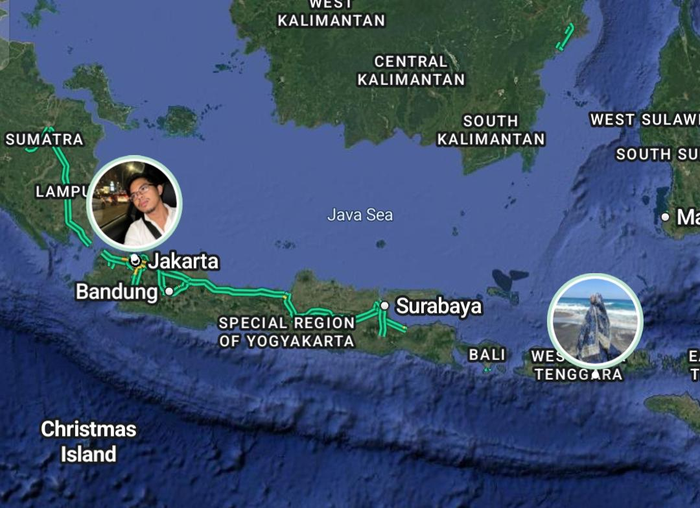

A LETTER FROM MY HEART
🌙 ✦ 💙 ✦ 🌙
For You, My Favorite Person
To my favorite human,
Hari ini tepatnya 18 Oktober 2026. Umurmu genap 26 tahun.
Dahulu ditanggal ini, kamu pertama kali menghirup oksigen
dan melihat dunia. Perjuangan mama berhasil, melahirkan dan
membesarkanmu sampai usiamu yang sekarang.
Terima kasih sudah bertahan dan berjuang sampai usiamu saat ini. ♡
Aku berharap hari-harimu selalu dipenuhi
kebahagiaan, ketenangan, dan hal-hal baik.
Semoga setiap langkahmu membawa
kamu lebih dekat dengan impianmu.
Terima kasih sudah menjadi bagian
dari cerita hidupku. Semoga kita
bisa saling memperbaiki diri dan menjadi pribadi
yang lebih baik lagi. Selamat Ulang Tahun Sayangku 💙
With all my wishes,
Farihan ♡
A FEW LITTLE MEMORIES
Little Pieces of Our Story ♡
Some little moments, some simple conversations,
and a story that slowly became something worth keeping.
01 · THE BEGINNING
It Started With a Little Hello ♡
We met on Litmatch and started talking casually,
just for fun. Neither of us knew that those little
conversations would slowly become familiar,
and that I would come to keep some of them as memories.
Tap a picture to see it more clearly ♡
02 · MY FIRST IMPRESSION
☾ ✦ ☽
The Way I First Saw You
You seemed simple and straight to the point.
Sometimes you talked big, which still makes me smile.
You could be a good listener, too.
You were not exactly the easiest person to get close to,
but little by little, I got to know more of you.
"Some people take time to understand,
and that is part of their story, too."
03 · THE DISTANCE
Different Islands, One Little Story
We live on different islands, with distance between us.
Even so, we still have conversations, share little moments,
and slowly build our own story from where we are.

Different places, one little story ♡
04 · OUR LITTLE ARCHIVE
Pieces of Us ✦
Little conversations, familiar calls, and small moments
worth keeping close. A few pieces of our story, gathered here. ♡
Moments We Talked ☾
The little calls that became memories.
Little Conversations ♡
A few words I wanted to keep.
Little Things We Shared ✦
Pieces from our Litmatch days.
A Few More Memories ☁
The random little things that still feel special.
Tap any picture to see it more clearly ♡
🌙 ✦ 💙 ✦ 🌙
Still Here, Still Becoming
We are still growing, still learning,
and still becoming who we are meant to be.
And these little memories will always be
a part of this chapter. ♡